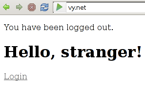

Play has a really neat module, called Secure, to ease the authentication mechanics in a web application. Unfortunately, nowadays none of us would really be willing to fill yet another registration form, that is where Facebook Login (and similars) comes into play. The problem is, Facebook Login is not something trivial, and integrating it into Secure poses another challange. In this post, I will try to walk you through a Play web application with Secure module enabled and wrapped around Facebook Login. We will use OAuth2 provided by Play to get an access token from Facebook, and later issue queries using RestFB.
Let’s start with creating the project directory.
play new PlayTestNext, we introduce module dependencies to conf/dependencies.yml file.
require:
- play 1.2.4
- play -> secure
- com.restfb -> restfb 1.6.9Let Play resolve the dependencies for us.
play dependenciesAs a first step, let’s start with creating an entrance page. Here goes our app/views/Application/index.html.
#{extends 'main.html' /}
#{set title:'Home' /}
#{if flash.error}<p class="error">&{flash.error}</p>#{/if}
#{if flash.success}<p class="success">&{flash.success}</p>#{/if}
#{if user}
<h1>Welcome, ${user.name}</h1>
<p>id: ${user.uid},
name: ${user.name},
isAdmin: ${user.isAdmin}</p>
<p><a href="@{Secure.logout()}">Logout</a></p>
#{/if}
#{else}
<h1>Hello, stranger!</h1>
<a href="@{Secure.login()}">Login</a>
#{/else}Oops! But we still didn’t add secure module routes. Add below lines to your conf/routes file.
# Import Secure routes
* / module:secure
Before typing play run in the console, I will first add http.port=80 line to conf/application.conf and add 127.0.0.1 vy.net line to /etc/hosts file. I want my application to get served on http://vy.net at localhost. This small trick will enable me to work with Facebook Login on localhost, before going public. (Remember that Facebook Apps require a proper domain name to redirect issued requests.)
Let’s start our application.
sudo play runAnd browse to http://vy.net.

So far so good. Login link in the above page redirects us to /secure/login, hence we will need to override login.html (and layout.html for altering <html> tag attributes) contents.
play secure:ov --login
play secure:ov --layoutFirst add xmlns:fb="http://www.facebook.com/2008/fbml" attribute to <html> tag in app/views/Secure/layout.html. Later, override app/views/Secure/login.html as follows.
#{extends 'Secure/layout.html' /}
#{if flash.error}<p class="error">&{flash.error}</p>#{/if}
#{if flash.success}<p class="success">&{flash.success}</p>#{/if}
<div id="fb-root"></div>
<script
type="text/javascript"
src="http://connect.facebook.net/en_US/all.js">
</script>
<fb:login-button perms="publish_stream">
<a href="@{Security.auth()}" class="fb_button fb_button_medium">
<span class="fb_button_text">Log In</span>
</a>
</fb:login-button>Click to Login link and go to http://vy.net/secure/login.

Yay! Now we have a Facebook Login button that will redirect Facebook approved login requests to Security.auth() method. (See <a href="@{Security.auth()}" class="fb... line.) Before going into the details of Security controller, we first need to create a Facebook App and User model to store registered users. For this purpose, go to Facebook Apps page and create a new application. Don’t forget to note down the App ID/API Key and App Secret of the created app. And you need to set Site URL to http://vy.net/. Later, create app/models/User.java as follows.
@Entity
@Table(name = "users")
public class User extends Model {
@Unique
@NotNull
@Required
public String uid;
@NotNull
@Required
public String name;
@NoBinding
public boolean isAdmin;
public User(String uid, String name) {
this.uid = uid;
this.name = name;
}
}Now here comes the trick, the Security controller. Let’s first write the code: Here goes app/controllers/Security.java.
public class Security extends Secure.Security {
static OAuth2 FBOAuth = new OAuth2(
"https://graph.facebook.com/oauth/authorize",
"https://graph.facebook.com/oauth/access_token",
"17014613976****", // App ID/API Key
"04bf6165527ec9e30a7d2aa380e5****" // App Secret
);
public static void onAuth() {
if (OAuth2.isCodeResponse()) {
OAuth2.Response response = FBOAuth.retrieveAccessToken(onAuthURL());
FacebookClient fbClient = new DefaultFacebookClient(response.accessToken);
User fbUser = fbClient.fetchObject("me", com.restfb.types.User.class);
models.User user = models.User.getById(fbUser.getId());
if (user == null)
user = new models.User(fbUser.getId(), fbUser.getName()).save();
session.put("username", user.uid); // Required by Secure.
session.put("uid", user.uid);
flash.success("You are logged in.");
Application.index();
}
}
static String onAuthURL() {
return play.mvc.Router.getFullUrl("Security.onAuth");
}
public static void auth() {
FBOAuth.retrieveVerificationCode(onAuthURL());
}
static void onDisconnected() {
flash.success("You have been logged out.");
Application.index();
}
}In login.html, we have prompted Facebook Login to redirect issued requests to Security.auth(). Here, in auth(), we tell FBOAuth to retrieve verification code (provided by OAuth2 protocol) via onAuth() method. In onAuth(), we first retrieve the access token and use this access token to construct a Facebook client using RestFB. (In other words, access token is the key for us to talk with Facebook behalf of the logged in user.) Later, using created Facebook client, we retrieve the user information into a com.restfb.types.User object. Consequently, we try to locate the current user in the available list of users, or create a new one if no such user exists. Finally, we store the user ID in uid and username session variables. The significant bit in here is the username session variable, which is required by Secure module to figure out if a user is logged in or not. The other uid session variable is for our own use.
Now we have necessary plumbing to authenticate a Facebook user. Do you remember the #{if user} line in index.html? Yep, now it’s time to put the user as a render argument for Application.index view. For this purpose, edit app/controllers/Application.java as follows.
public class Application extends Controller {
@Before
static void setRenderArgs() {
if (session.contains("uid"))
renderArgs.put("user", User.getById(session.get("uid")));
}
public static void index() {
render();
}
}After creating Security controller and updating Application.index() method, click on the Facebook Log In button appeared on the /secure/login page. When you finish giving related access rights to the application, you should have forwared to the Application.index view, which should look like as follows.

Let’s give Logout link a try.

Now you can just use @With(Secure.class) annotations to define access control for your controllers. (As a next step, you might want to create a Users CRUD controller with access control.)
Edit: Don’t forget to checkout the play-facebook, which is ready to go Play Framework application with Facebook Login integration. It follows the mechanics described in here and provides an archetype to bootstrap custom applications.